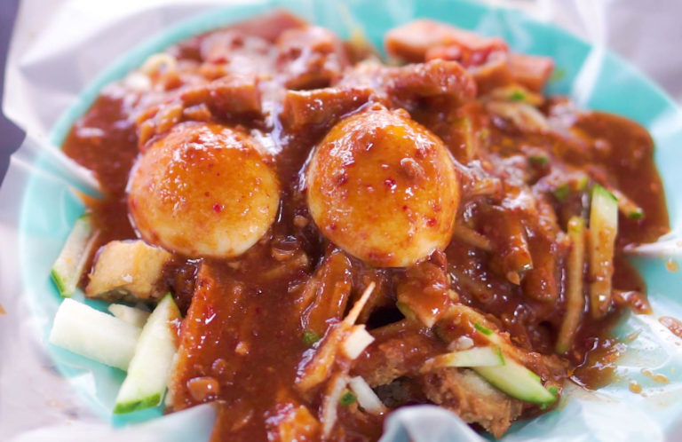
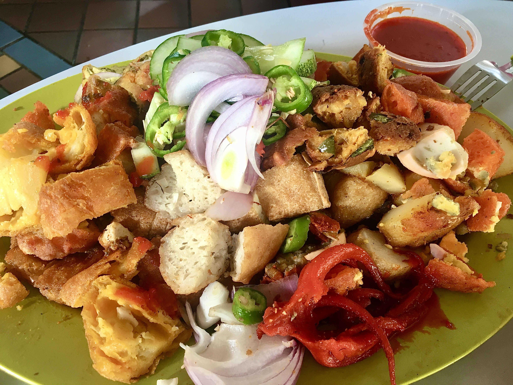

In Malaysia, mamak rojak (also known as Indian rojak or Pasembur) is associated with Mamak stalls, which are Muslim Malaysian Indian food stalls where rojak mamak is a popular dish.It contains fried dough fritters, tofu, boiled potatoes, prawn fritters, hard boiled eggs, bean sprouts, cuttlefish and cucumber mixed with a sweet thick, spicy peanut sauce.In the northwestern states of Peninsular Malaysia such as Penang, and Kedah, it is always called pasembur, while in Kuala Lumpur it is called rojak mamak.
In Singapore, Indian rojak consists of an assortment of potatoes, hard-boiled eggs, tofu and prawn fritters, often colorfully dyed. Customers typically select their favorite items from a display, after which they are heated up in a wok, chopped up, and served with a sweet and spicy peanut and chilli sauce on the side for dipping.
